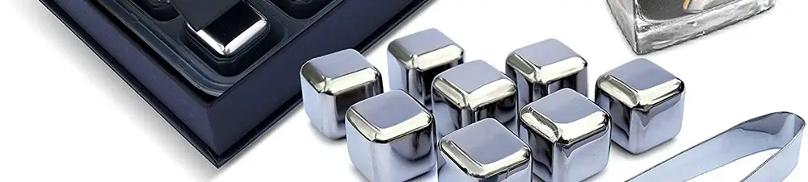

Mengenal Es Batu Stainless Steel: Inovasi Dingin Tanpa Mengubah Rasa Minuman
Dipublikasikan pada 12 Agustus 2025

Saat cuaca sedang terik, tidak ada yang lebih menyegarkan daripada meneguk minuman dingin. Entah itu minuman ready to drink (RTD) dari kulkas, es teh jumbo di pinggir jalan, minuman creamy seperti es dawet, atau minuman buatan sendiri di rumah.
Ketika membuat minuman dingin di rumah, kita biasanya menggunakan air dingin atau es batu biasa. Namun, tahukah Anda bahwa sekarang ada inovasi baru? Es batu kini juga tersedia dalam versi stainless steel. Bayangkan sebuah kubus berwarna perak dengan sudut-sudut halus yang terbuat dari baja tahan karat!
Manfaat Utama Es Batu Stainless Steel
Apa fungsi utama dari es batu stainless steel ini? Manfaat terbesarnya adalah kemampuannya untuk mendinginkan minuman tanpa menambah cairan di dalamnya. Ini berbeda dengan es batu dari air yang akan mencair dan mengubah konsentrasi rasa minuman seiring waktu.
Oleh karena itu, es batu stainless steel sering digunakan oleh para barista atau peracik minuman profesional yang membutuhkan presisi rasa. Dengan menggunakan es ini, rasa minuman yang mereka racik akan tetap stabil dan tidak berubah, bahkan setelah didiamkan beberapa saat.
Saat ini, ada juga es batu stainless steel versi ekonomis yang bagian tengahnya berisi air. Tim Mas Tukang pernah mencoba menggunakannya untuk mendinginkan milkshake sebanyak 150 ml. Dengan empat butir es ini, suhu milkshake turun dari 30°C menjadi 15.8°C hanya dalam waktu sekitar 3 menit.
Keamanan dan Kemudahan Penggunaan
Penting untuk diketahui, es stainless steel ini biasanya dibuat dari bahan food grade, jadi aman digunakan untuk makanan dan minuman. Setelah selesai digunakan, Anda cukup mencucinya, lalu dinginkan kembali di freezer untuk penggunaan berikutnya. Ini menjadikan es batu stainless steel pilihan yang praktis dan ramah lingkungan.
Bagaimana, tertarik untuk mencoba? Video singkat tentang penurunan suhu milkshake menggunakan es stainless steel dapat ditonton di bawah ini. Semoga bermanfaat!